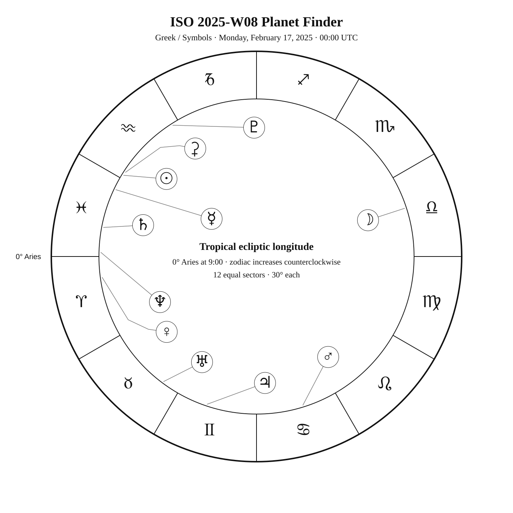
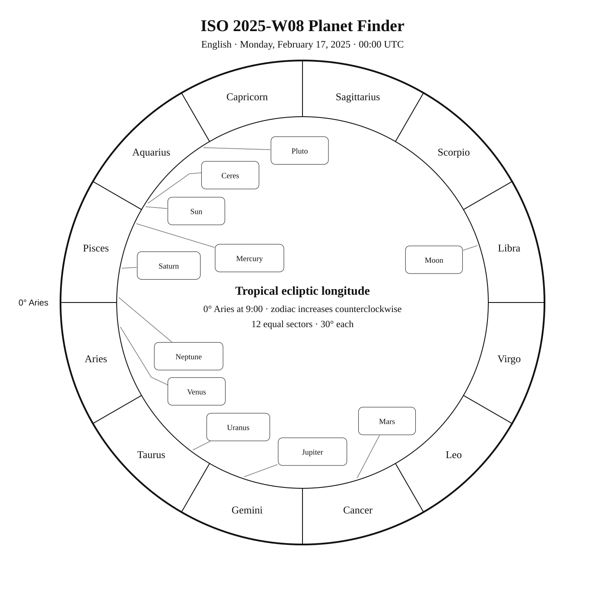
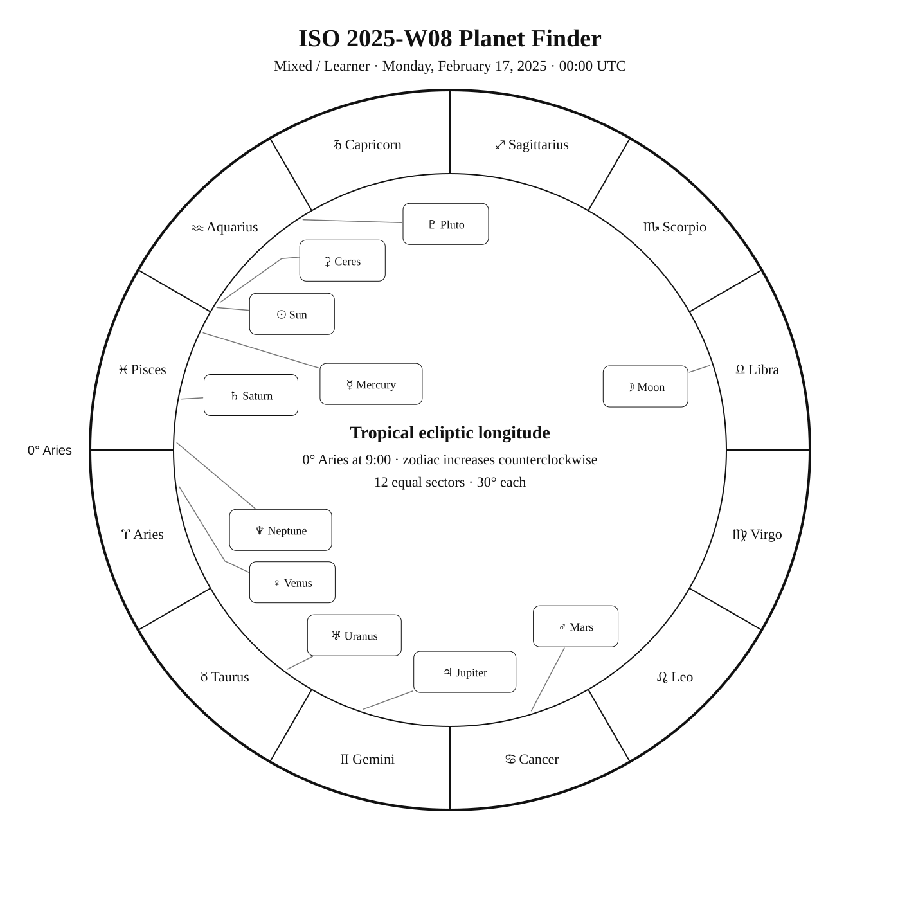

ISO 2025-W08
Week begins: Monday, February 17, 2025
Calendar
| Date | Zodiac day | Events |
|---|---|---|
| Mon, Feb 17, 2025 | ♒ 30 | M50 —  6 6.3 — Tropical Winter 6 6.3 — Tropical Winter |
| Tue, Feb 18, 2025 | ♓ 1 | ♓ Sun enters Pisces — 10:06:34 UTC Wezen (δ CMa) —  2 1.8 — Southern Winter 2 1.8 — Southern Winter |
| Wed, Feb 19, 2025 | ♓ 2 | |
| Thu, Feb 20, 2025 | ♓ 3 | 🌗 Last Quarter — 17:32:32 UTC |
| Fri, Feb 21, 2025 | ♓ 4 | C58 / NGC 2360 — 7 7.2 — Tropical WinterFinest NGC 34 / NGC 2359 · Thor's Helmet — — Tropical WinterC64 / NGC 2362 · Tau Canis Majoris Cluster — 4 4.1 — Southern Winter |
| Sat, Feb 22, 2025 | ♓ 5 | |
| Sun, Feb 23, 2025 | ♓ 6 | Aludra (η CMa) — 2 2.5 — Southern WinterFinest NGC 30 / NGC 2371 · Gemini Nebula; 2372? — 11 11.2 — Northern WinterGomeisa (β CMi) — 3 2.9 — Tropical Winter |
Weekly Solar-System Ephemeris
Snapshot: Week begins February 17, 2025, 00:00 UTC.
(-90° to +90°; defaults +45°, 21:00 LAT)
| Body | ☉︎ | ☽︎ | ☿︎ | ♀︎ | ♂︎ | ♃︎ | ♄︎ |
|---|---|---|---|---|---|---|---|
| Ecliptic | ♒︎ 28°34′ β −0°00′ | ♎︎ 18°01′ β −1°50′ | ♓︎ 4°36′ β −1°38′ | ♈︎ 7°42′ β +4°34′ | ♋︎ 17°20′ β +3°54′ | ♊︎ 11°33′ β −0°26′ | ♓︎ 19°15′ β −1°55′ |
| Observing |  | -11.3 | ☉︎ | -4.9 | -0.6 | -2.4 | 1.1 |
| Rise | 06:45 | 21:32 | 07:09 | 07:46 | 13:12 | 11:00 | 07:42 |
| Set | 17:15 | 08:29 | 17:42 | 20:50 | 05:16 | 02:15 | 18:59 |
Extended targets:
| Body | ⚳︎ | ♅︎ | ♆︎ | ♇︎ |
|---|---|---|---|---|
| Ecliptic | ♒︎ 27°16′ β −7°18′ | ♉︎ 23°24′ β −0°14′ | ♓︎ 28°28′ β −1°16′ | ♒︎ 2°33′ β −3°20′ |
| Observing | ☉︎ |  5.8 5.8 | 7.8 | 14.5 |
| Rise | 07:24 | 10:00 | 07:58 | 05:56 |
| Set | 16:47 | 00:42 | 19:49 | 14:43 |
β = ecliptic latitude (+ north, − south).
Rise and set are Local Apparent Time for the selected latitude.
Naked-eye observing uses the Sun’s altitude at the selected Monday observer time: Daylight (Sun ≥ −0.833°), Civil twilight (−0.833° to −6°), Nautical twilight (−6° to −12°), Astronomical twilight (−12° to −18°), and Night (below −18°).
Solar Glare identifies a body too close to the Sun when the sky-state rule does not already supersede its naked-eye classification.
The Sun’s observing status uses this same five-state sky classification.
Planet Finder



Sky Notes
Kilroy: Sky Notes · generated 2026-10-23 04:55:52 UTC
ISO 2025-W08 runs from February 17 through February 23. Jupiter is about 1.8° in ecliptic longitude from Aldebaran in Taurus.

Naked eye: 🌗 Last Quarter — 17:32:32 UTC. Moderate moonlight makes timing and local sky position important for faint targets. Use Wezen, Aludra, Gomeisa as the week’s fixed-sky framework.
Planets: Moon: Naked eye; magnitude -11.3; direct motion; 82.6% illuminated. Below the horizon at 21:00 local apparent solar time, 45°N. Monday 00:00 UTC snapshot. Mercury: In solar glare; magnitude -1.5; direct motion; 97.8% illuminated. Monday 00:00 UTC snapshot. Venus: Naked eye; magnitude -4.9; direct motion; 25.5% illuminated. Below the horizon at 21:00 local apparent solar time, 45°N. Monday 00:00 UTC snapshot. Mars: Naked eye; magnitude -0.6; retrograde motion; 95.9% illuminated. Monday 00:00 UTC snapshot. Ceres: In solar glare; magnitude 9.0; direct motion; 100.0% illuminated. Monday 00:00 UTC snapshot. Jupiter: Naked eye; magnitude -2.4; direct motion; 99.1% illuminated. Monday 00:00 UTC snapshot. Saturn: Naked eye; magnitude 1.1; direct motion; 100.0% illuminated. Below the horizon at 21:00 local apparent solar time, 45°N. Monday 00:00 UTC snapshot. Uranus: Binoculars; magnitude 5.8; direct motion; 99.9% illuminated. Monday 00:00 UTC snapshot. Neptune: Telescope; magnitude 7.8; direct motion; 100.0% illuminated. Below the horizon at 21:00 local apparent solar time, 45°N. Monday 00:00 UTC snapshot. Pluto: Substantial telescope; magnitude 14.5; direct motion; 100.0% illuminated. Below the horizon at 21:00 local apparent solar time, 45°N. Monday 00:00 UTC snapshot.


Binoculars: No fixed-sky Calendar object is classified for binocular observing this week.
Small telescope: M50: consult its dedicated finder and observing story for equipment guidance; NGC 2360: consult its dedicated finder and observing story for equipment guidance; Thor's Helmet: consult its dedicated finder and observing story for equipment guidance; Tau Canis Majoris Cluster: consult its dedicated finder and observing story for equipment guidance; Gemini Nebula; 2372?: consult its dedicated finder and observing story for equipment guidance
Substantial telescope: No fixed-sky Calendar object is classified as requiring a substantial telescope this week.
Other objects listed this week: None
Mercury
Mercury: in solar glare at the Monday 00:00 UTC snapshot. Rises 07:09; sets 17:42 (45°N, local apparent solar time). Visual magnitude -1.5. The disk is 97.8% illuminated (gibbous). It is 6.2° from the Sun, on its east side. Motion is direct at 1.850° per day in ecliptic longitude at the snapshot. Position reference: Sadalmelik, 12.3° away. Mercury: 12.3° from Sadalmelik in the Pathfinder.
Venus
Venus: naked eye at the Monday 00:00 UTC snapshot. At 45°N and 21:00 local apparent solar time, it is 2.3° below the horizon. Rises 07:46; sets 20:50 (45°N, local apparent solar time). Visual magnitude -4.9. The disk is 25.5% illuminated (crescent). It is 39.4° from the Sun, on its east side. Motion is direct at 0.453° per day in ecliptic longitude at the snapshot. Position reference: Fumalsamakah, 19.2° away. Venus: 19.2° from Fumalsamakah in the Pathfinder.
Moon
Moon: naked eye at the Monday 00:00 UTC snapshot. At 45°N and 21:00 local apparent solar time, it is 6.2° below the horizon. Rises 21:32; sets 08:29 (45°N, local apparent solar time). Visual magnitude -11.3. The disk is 82.6% illuminated (waning gibbous). It is 130.5° from the Sun, on its west side. Motion is direct at 11.850° per day in ecliptic longitude at the snapshot. Position reference: Spica, 6.2° away. Moon: 6.2° from Spica in the Pathfinder.
Mars
Mars: naked eye at the Monday 00:00 UTC snapshot. At 45°N and 21:00 local apparent solar time, it is 71.0° above the horizon. Rises 13:12; sets 05:16 (45°N, local apparent solar time). Visual magnitude -0.6. The disk is 95.9% illuminated (gibbous). It is 138.6° from the Sun, on its east side. Motion is retrograde at 0.091° per day in ecliptic longitude at the snapshot. Position reference: Pollux, 6.8° away. Mars: 6.8° from Pollux in the Pathfinder.
Jupiter
Jupiter: naked eye at the Monday 00:00 UTC snapshot. At 45°N and 21:00 local apparent solar time, it is 52.7° above the horizon. Rises 11:00; sets 02:15 (45°N, local apparent solar time). Visual magnitude -2.4. The disk is 99.1% illuminated (nearly full). It is 103.0° from the Sun, on its east side. Motion is direct at 0.042° per day in ecliptic longitude at the snapshot. Position reference: Aldebaran, 5.2° away. Jupiter: 5.2° from Aldebaran in the Pathfinder.
Saturn
Saturn: naked eye at the Monday 00:00 UTC snapshot. At 45°N and 21:00 local apparent solar time, it is 21.8° below the horizon. Rises 07:42; sets 18:59 (45°N, local apparent solar time). Visual magnitude 1.1. The disk is 100.0% illuminated (nearly full). It is 20.8° from the Sun, on its east side. Motion is direct at 0.118° per day in ecliptic longitude at the snapshot. Position reference: Fumalsamakah, 11.0° away. Saturn: 11.0° from Fumalsamakah in the Pathfinder.
Uranus
Uranus: binoculars at the Monday 00:00 UTC snapshot. At 45°N and 21:00 local apparent solar time, it is 37.6° above the horizon. Rises 10:00; sets 00:42 (45°N, local apparent solar time). Visual magnitude 5.8. The disk is 99.9% illuminated (nearly full). It is 84.8° from the Sun, on its east side. Motion is direct at 0.015° per day in ecliptic longitude at the snapshot. Position reference: Menkar, 15.1° away. Uranus: 15.1° from Menkar in the Pathfinder.
Neptune
Neptune: telescope at the Monday 00:00 UTC snapshot. At 45°N and 21:00 local apparent solar time, it is 13.0° below the horizon. Rises 07:58; sets 19:49 (45°N, local apparent solar time). Visual magnitude 7.8. The disk is 100.0% illuminated (nearly full). It is 29.9° from the Sun, on its east side. Motion is direct at 0.034° per day in ecliptic longitude at the snapshot. Position reference: Fumalsamakah, 14.0° away. Neptune: 14.0° from Fumalsamakah in the Pathfinder.
Ceres
Ceres: in solar glare at the Monday 00:00 UTC snapshot. Rises 07:24; sets 16:47 (45°N, local apparent solar time). Visual magnitude 9.0. The disk is 100.0% illuminated (nearly full). It is 7.4° from the Sun, on its west side. Motion is direct at 0.393° per day in ecliptic longitude at the snapshot. Position reference: Fomalhaut, 15.4° away. Ceres: 15.4° from Fomalhaut in the Pathfinder.
Pluto
Pluto: substantial telescope at the Monday 00:00 UTC snapshot. At 45°N and 21:00 local apparent solar time, it is 62.6° below the horizon. Rises 05:56; sets 14:43 (45°N, local apparent solar time). Visual magnitude 14.5. The disk is 100.0% illuminated (nearly full). It is 26.2° from the Sun, on its west side. Motion is direct at 0.030° per day in ecliptic longitude at the snapshot. Position reference: Dabih, 8.1° away. Pluto: 8.1° from Dabih in the Pathfinder.
Highlights
Mercury
In solar glare; magnitude -1.5; direct motion; 97.8% illuminated. Monday 00:00 UTC snapshot. Mercury: 12.3° from Sadalmelik in the Pathfinder.
Venus
Naked eye; magnitude -4.9; direct motion; 25.5% illuminated. Below the horizon at 21:00 local apparent solar time, 45°N. Monday 00:00 UTC snapshot. Venus: 19.2° from Fumalsamakah in the Pathfinder.
Moon
Naked eye; magnitude -11.3; direct motion; 82.6% illuminated. Below the horizon at 21:00 local apparent solar time, 45°N. Monday 00:00 UTC snapshot. Moon: 6.2° from Spica in the Pathfinder.
Mars
Naked eye; magnitude -0.6; retrograde motion; 95.9% illuminated. Monday 00:00 UTC snapshot. Mars: 6.8° from Pollux in the Pathfinder.
Jupiter
Naked eye; magnitude -2.4; direct motion; 99.1% illuminated. Monday 00:00 UTC snapshot. Jupiter: 5.2° from Aldebaran in the Pathfinder.
Saturn
Naked eye; magnitude 1.1; direct motion; 100.0% illuminated. Below the horizon at 21:00 local apparent solar time, 45°N. Monday 00:00 UTC snapshot. Saturn: 11.0° from Fumalsamakah in the Pathfinder.
Uranus
Binoculars; magnitude 5.8; direct motion; 99.9% illuminated. Monday 00:00 UTC snapshot. Uranus: 15.1° from Menkar in the Pathfinder.
Neptune
Telescope; magnitude 7.8; direct motion; 100.0% illuminated. Below the horizon at 21:00 local apparent solar time, 45°N. Monday 00:00 UTC snapshot. Neptune: 14.0° from Fumalsamakah in the Pathfinder.
Ceres
In solar glare; magnitude 9.0; direct motion; 100.0% illuminated. Monday 00:00 UTC snapshot. Ceres: 15.4° from Fomalhaut in the Pathfinder.
Pluto
Substantial telescope; magnitude 14.5; direct motion; 100.0% illuminated. Below the horizon at 21:00 local apparent solar time, 45°N. Monday 00:00 UTC snapshot. Pluto: 8.1° from Dabih in the Pathfinder.